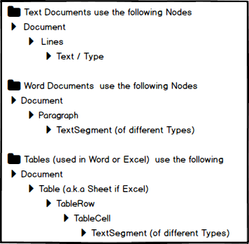

Appendix - Navigating Unstructured Data
- Introduction
- General Navigation Concepts
- Node Based Examples
- Advanced Navigation Features
Introduction
The following is an overview for Classification Marker and Mapping Navigation capabilities.
As you have read previously, the purpose of the Classification component is to target Non- or Semi-Structured Data Sources such as Word, Excel, Text or imaged documents, search thru them and extract, and possibly manipulate, data otherwise trapped in these files. In other word, creating structured data from unstructured sources.
A few definitions:
Structured Data, a.k.a databases, first depends on creating a data model – a model of the types of business data that will be recorded and how they will be stored, processed and accessed. For most legacy databases, this includes defining what fields of data will be stored and how that data will be stored: data type (numeric, currency, alphabetic, name, date, address) and any restrictions on the data input (number of characters; restricted to certain terms such as Mr., Ms. or Dr.; M or F). These types of databases are usually tightly connected with some version of SQL. More modern databases are classified as a NoSql database program. For example, MongoDB uses JSON-like documents that have schemas.
Unstructured Data files often include text, tables and even multimedia content. Variations of this term include Non-Structured and Semi-Structured data. Examples include e-mail messages, word processing documents, spreadsheets, presentations, webpages and many other kinds of business documents. The term Semi-Structured implies that some of these files can have some degree of internal structure. If you think of an email, you can see that there is a ‘To:’ field, a ‘From:’ field, ‘Subject:’ Line, ‘Body:’ and so on. A word document may have embedded tables, paragraphs, and so on. They are still not considered Structured because the data they contain doesn't fit neatly in a database.
Experts estimate that 80 to 90 percent of the data in any organization is unstructured and the amount of unstructured data in enterprises is growing significantly — often many times faster than structured databases.
The PD3P has adopted a multi-pronged approach to dealing with navigation and the targeting of data that was previously locked up in these Non- and Semi-Structured documents:
- A universal navigation syntax using the concept of nodes (explained below).
- Special functions available via dropdown for certain type of data. For example, Anchor/Offset or Triangulated data.
- Specialized helpers, such as dateHelper, that assist and provide flexibility to certain types of data.
- Access to powerful industry standard expression tools such as JAVA RegEx and Spring Expression Language (spEl). Options such as Anchor/Offset, Triangulation and helpers are constantly being added to the PD3P, however there is tremendous power in writing advanced expressions to search and navigate around a file in order to target and manipulate data to be extracted and aggregated.
The Node approach capability incorporates:
- Text files which result from importing PDFs or scanned image data.
- MS Word© (includes Word2003, Word2003xml and Word 2010 variations).
- In the near future, Excel will be folded into the node approach. For now, Excel navigation currently has its own navigation model.
Additional Material
The Pendo Digital Data Discovery Platform capabilities are modified and expanded quite frequently. The examples previded below are only a subset of the full capabilites of the Platform. Full JAVADOC documentation can be found at URL:XXXXXXXX.placeholder
Regular Expressions (RegEx) are a very powerful industry standard tool to aid in complex queries. Please go to Regular Expression Reference Page for all available syntax options. This is a very feature rich syntax. Please be sure to select Java as the flavor of RegEx.
The full capabilities of the Spring Expression Language (SpEL) is also available, providing additional powerful functions. Please refer to [Spring Expression Language (SpEL)] (http://docs.spring.io/spring/docs/current/spring-framework-reference/html/expressions.html)
General Navigation Concepts
What do we mean by document navigation? In the context of unstructured data this means searching and moving around a file such as a Word document with the ultimate goal of extracting and/or manipulating specific data and putting it into a table. In other words, creating structured data from unstructured sources.
The PD3P supports this sophisticated handling and manipulation of unstructured data. Beyond being able to search through any mixture of unstructured and structured data, you can extract and even manipulate data so that you can meet regulatory requirements, internal risk assessments and generally perform analysis and/or send the extracted information to other systems on your network. The PD3P also tracks all rules and datasets used so that there is a record of 'data hops', meaning that you can see what data looked like and what actions were performed from the source document until extraction is complete.
A simple example of navigation would be to search for the words ‘Credit Score’, and then find the next value to the right so that it can be extracted. For example a very simple text file might look like this:
| Prepared: | Jan 31, 2017 |
|---|---|
| Credit Score for: | John Smith |
| As Of: | Jan 17, 2017 |
| Credit Score: | 700 |
What you may wish to extract is the person’s name, ‘As Of’ date and the credit score. However, you have 21 million files like this. Further, you may wish to reformat the date from ‘mmm dd, yyyy’ to ‘mm-dd-yyyy’ (1-17-2017) and break out ‘John Smith’ into two fields of Last Name and First Name.
You will find when dealing with large volumes of data created over time that the formats change. For example:
| Prepared: | Jan 31, 2017 | ||
|---|---|---|---|
| Credit Score for: | John Smith | ||
| Previous Score | 650 | Previous As of: | November 15, 2016* |
| As Of: | Jan 17, 2017 | ||
| Credit Score: | 700 |
You may want to include or disregard the previous score whenever it is available. This concept of dealing with source files changing over time is core to the success of most of these types of projects.
A few other examples:
- You may want to search for a specific table in a Word document that has several tables and extract the data in the in the second row, 8th column.
- You may want to search for 5th persons name in a document and extract the name and address.
- You may want to find and extract the first, second and fifth occurrences of a company name in a PDF.
- You may want to open a spreadsheet, find a specific worksheet, then find the 3rd time the Word ‘Retail’ appears and then get the next 5 column of data to the right that are not empty.
As you can see, the possibilities are endless.
Node Navigation Basics
One of the PD3P approaches navigation using a node-based concept. This is applied no matter the type of file you are navigating. You move and search through a tree of nodes where each node has a parent and an ordered list of children.
For example, if you start at the top of a Word document, you may wish to go to the second paragraph (a node) and then search for and extract a Person’s Name that is somewhere in the paragraph (text segment).
A more complex example would starting from the top of a Word document (root node), you may want to search for the second table (which is a table node) and then find the row (row node) that starts with the words ‘Credit Score’. You could then further navigate by finding the next cell to the right (a cell node) which is not blank, get that value, trim it (for example $10 becomes 10) and extract that to a Target Entity.
This gets easier with a bit of practice, especially as the syntax used is common no matter the type of file with which you are dealing.
Node organization based on File Type
While the concept of moving around nodes is universal in various types of files, exactly what a node is depends on the type of file being used and where you are in navigating that document. Below, each arrow shows the hierarchy of nodes for each file type and ending with text or text-segments. The topmost node, known as the root node, is always the document (PDF, Excel, Word, etc.) itself.

Text documents Node Structure
A Text file results from importing PDFs or image files. During Import, you would have used the ‘PDF to Text’ or ‘Google Tesseract OCR’ plugin along with the ‘Text Classification/Parser’ Plugin.
- The Text Document is the Root Node and contains a list of children nodes that are called Lines (think of lines of text).
- A text document does not have paragraphs or table nodes, rather it has 'lines'. It is a completely unstructured data file.
- Lines contains lists of characters. Child text-segment nodes can be extracted i.e. sentences, tokens, dates, etc. These segments are child nodes of the parent line.
Word Document Structure
- The Word document is the root node and contains a list of children: paragraphs and tables.
- Paragraph contains lists of characters which can be treated as various text-segments. Child text segment nodes can be extracted from a paragraph, i.e. sentences, tokens, dates, names, organizations, parts of speech, etc. These segments are child nodes of the parent paragraph.
- A Table Node contains list of child rows, and each row contains list of child cells.
- Like paragraphs, a cell contains list of characters which can be treated as various text-segments which can be extracted from cells.
Table Structure
- Tables are unique in that both Excel and Word can used the same concepts of Table Nodes.
- For Excel, the Excel document is the Root Node and contains a list of children: sheets, rows, columns and cells.
- For Word, the Word document is the Root Node and a Table is a child node
- The Nodes in Excel are the same as within a table in Word with the following exception:
- In Excel, Sheet (a.k.a. Worksheet) is the node level directly under the Root Node. A Word document does not have sheets.
- A Table node contains list of child rows, and each row contains list of child columns and cells.
- Like paragraph, a cell contains list of characters which can be treated as various types of text-segments.
Advanced Node Concepts
For people with some programming background or who are familiar with Excel macros, the following information provides additional insights. The concept of Nodes, Text, Natural Language Processing (NLP) and Types cuts across all files types supported on the PD3P. Most of the navigation options fall into the following object types:
- Node - for navigating to parent, sibling and children or finding descendants by regex or named entity like person or date.
- Collection of Nodes - for retrieving child from list, getting a slice of the list or finding child by RegEx or Named Entity.
- Text - for navigating, slicing, extracting or finding RegEx or Named Entities in text.
- NLP – (Natural Language Processing) for finding text based on analysis of natural language, e.g. Named Entities like person, organization, date, etc.
- Type – search for a type of data including:
| Types of Data | |
|---|---|
| column | date |
| location | money |
| number | organization |
| percentage | person |
| phrase | root |
| sentence | time |
| token | word |
Interface Summary
| Interface | Description |
|---|---|
| Node | Ordered node in the document tree. |
| NodeCollection | An ordered list of node children |
| Table | A Node that represents a two-dimensional grid of rows containing cells |
| TableCell | Cell in a row |
| TableRow | A row in a table containing cells |
| Text | A node that contains text such as a paragraph, line or cell. |
Class Summary
| Class | Description |
|---|---|
| CharacterNode | A code that represents a single character in a string of text |
| TextCollection | A collection of text nodes |
| TextSegment | Represents a segment of text within a string |
Node Based Examples
Navigating in Word using Nodes
Test Document
Below is a test document that will be used for showing the results of a Word Expression Mapping in Classification. The layout of the sample document between the two dashed horizontal lines below. In this document we have:
• Paragraphs - any line or group of sentences not in a table that have a linefeed (a.k.a carriage return) after it.
• Tables – these are simple two row/two column tables.
• Names of people and organizations.
• Money and number example.
• Notice the line “This is another line with columns working. “ has some weird spacing. If you have words that have more than one blank space between them, they can optionally be treated as being in columns.
After that, over forty examples describe the navigation goal, the syntax and the result of that syntax.
And below that you have a list of many of the syntax options available to you.
And below that you have some complex examples to show the non-node methods of RegEx and spEl expressions for advanced users.
First paragraph.
Second paragraph.
Third paragraph.
Find me1
| Name: Tom | Find me2 |
|---|---|
| Find me3 | Credit Score: 700 |
Find me4
Here’s a paragraph with a lot of words. We’ve got a meeting on January 10, 2017. Let’s see how well OpenNLP works! My friend who works at Acme Bank owes me $10 for dinner. I would estimate a 90% chance of being paid.
This is another line with columns working.
Cheese balls (45555) -123,323 23,2333
| Name: Dick | |
|---|---|
| Credit Score: 750 |
101 Main St, Charlotte, NC 28203.
Blah blah blah.
Find me5
Blah blah blah.
| Name: Harry | Find me6 |
|---|---|
| Find me7 | Credit Score: 800 |
I have $1,123,123.123 in the bank.
Blah blah blah.
Find me8
Last paragraph.
Bracket Navigation Syntax
Here you will see the navigation goal, the syntax used, the result of the expression and, notes as needed.
| Goal – what are we trying to do? | Syntax | Results | Notes |
|---|---|---|---|
| Starting at the root node, get 1st node from the 2nd character onwards. | ['0']['1:'] | irst paragraph. | Note 1: The first node in a word document is the first paragraph. A paragraph is a group of words/sentences, etc. with a carriage return at the end. Paragraphs can be vary large or just one word. Note 2: Remember everything is zero indexed, meaning 0 is the first, 1 is the second and so on. Note 3: When specifying the first or last characters, a number is not needed, thus [‘1:’] means from second to last, and [‘:3] would mean from first to 4th. Note 4: within brackets that use colons, e.g. [‘1:3’], the last digit is a penultimate digit. The definition of penultimate is something that is second to last or right before the last item in a series. An example of penultimate is the letter "Y" which is the second to last letter in the alphabet. If you have a sentence that ends with a period, the penultimate character would be whatever is right before the period. |
| Get 1st node, then first character onwards to 5th character | ['0'][':5'] | First | |
| get 1st node, then first character onwards to 5th character from end | ['0']['-5:'] | raph. | Note 1: The use of negative numbers mean go to the end of the current node and move backwards. -1 means the last item, -5 means the 5th from last. In this example, we start at -5, so 5th from last. There is nothing after the colon, so that means go to the last. Note 2: characters include punctuation, thus you would get the period being the last character in this paragraph. |
| get 1st node, then first character to 2nd character | ['0']['0:2'] | Fi | Note: At first blush, the number 2 above might make you think you would get three characters since everything is 0 indexed. But remember the digit after the colon is penultimate (not inclusive), so in fact you get ‘Fi’ not ‘Fir’. |
| get 1st node, then first character to penultimate character | ['0']['0:-1'] | First paragraph | Note: If you thought you would get the period at the end as well as ‘First paragraph’, you forgot penultimate logic. -1 means the second to last. If you want the punctuation, see below. |
| get 1st node, then first character to last character | ['0'][':'] | First paragraph. |
Language Navigation
| Goal – what are we trying to do? | Syntax | Results |
|---|---|---|
| find the string 'Open NLP' then find the next word | findWord('OpenNLP', 1).next('word') | works |
| find first occurrence of word OpenNLP, then next organization | findWord('OpenNLP').next('organization') | Acme Bank |
| find first occurrence of word Bank, then next money | findType('word', 'Bank', 1).next('money') | $10 |
| find first occurrence of word Bank, then next money, then previous organization | findWord('Bank').next('money').previous('organization') | Acme Bank |
| find first occurrence of word Bank, then next money, then previous organization, then previous word | findWord('Bank').next('money').previous('organization').previousWord() | at |
Parts of Speech
| Goal – what are we trying to do? | Syntax | Results | Notes |
|---|---|---|---|
| find first occurrence of text segment 'I have', then first word from start of segment, then analyze simple part of speech | find('I have').nextWord(0).simplePartOfSpeech | PRONOUN | Note: after finding ‘I have’, the pointer is at the beginning of the text segment, thus pointing at ‘I’. nextWord (0) stays right there and specifically finds ‘I’, which is a pronoun. |
| find first occurrence of text segment 'I have', then second (next 1) word from start of segment, then analyze simple part of speech | find('I have').nextWord(1).simplePartOfSpeech | VERB | Note: after finding ‘I have’, the pointer is at the beginning of the test segment, thus pointing at ‘I’. Moving one word forward specifically finds ‘have’, which is a verb. |
| find first occurrence of text segment 'I have', then next number, then get text type | findSegment('I have').nextNumber().getTextType() | NUMBER |
Column Navigation
| Goal – what are we trying to do? | Syntax | Results | Notes |
|---|---|---|---|
| find first node containing 'another line', then next column | find('another line').nextColumn() | with columns | Note: when dealing with text, you can treat more than one consecutive space as an indication of moving from one column to the next. |
Table Navigation
| Goal – what are we trying to do? | Syntax | Results |
|---|---|---|
| find 5th node, 1st row, 1st cell, 7th letter to 9th letter | ['4']['0']['0']['6:9'] | Tom |
Regex Navigation
| Goal – what are we trying to do? | Syntax | Results | Notes |
|---|---|---|---|
| find node that starts with S and ends with d | ['S\w+d'] | Second paragraph | Note: finds the word ‘Second’ which is part of a Text Segment and returns the entire segment. |
Find Navigation
| Goal – what are we trying to do? | Syntax | Results |
|---|---|---|
| find first node that contains 'Find me' | find('Find me') | Find me1 |
| find the first occurrence of an node that contains 'Find me' | find('Find me', 2) | Find me2 |
| find 7th node that contains 'Find me', go 0 cells forward and 1 row up, extract text after 'Name: ' | find('Find me', 7).go(0,-1).extract('Name:(.*)') | Harry |
| find 6th node that contains 'Find me', go 1 cell backward and 0 rows up, extract text after 'Name:' | find('Find me', 6).go(-1,0).extract('Name: (.*)’) | Harry |
findSegment Navigation
| Goal – what are we trying to do? | Syntax | Results |
|---|---|---|
| find text segment that contains 'Main', get next work | findSegment('Main').nextWord() | St |
findPrevious Navigation
| Goal – what are we trying to do? | Syntax | Results |
|---|---|---|
| find 7th node that contains 'Find me', find relative previous 5th occurrence of 'Find me', go 1 cell backward and 0 rows up, extract text after 'Name: ' | find('Find me', 7).findPrevious('Find me', 5).go(-1,0).extract('Name: (.*)’) | Tom |
findLocation Navigation
| Goal – what are we trying to do? | Syntax | Results |
|---|---|---|
| find 'Find me5', find previous location that contains 'harlot' | find('Find me5').findPreviousType('location', 'harlot', 1)Charlotte | |
| find 'Find me5', find 2nd previous location | find('Find me5').findPreviousType('location', 2) | Main St |
| find 'Find me4', find next location | find('Find me4').findNextType('location', 1) | Main St |
| find 'Find me4', find next 2nd location | find('Find me4').findNextType('location', 2) | Charlotte |
| find 'Find me4', find next location containing 'ain', then find next location relative to that | find('Find me4').findNextType('location', 'ain').findNextType('location') | Charlotte |
| find 'Find me4', find next location, then find next location relative to that | find('Find me4').findNextType('location').next('location') | Charlotte |
Find a word then find a number
| Goal – what are we trying to do? | Syntax | Results |
|---|---|---|
| find node that contains 'Third', go forward 2 to table, get 2nd row, find cell that contains with Credit Score, 15th char onwards | ['Third'].go(2)['1']['Credit']['14:'] | 700 |
| find node that contains Tom', go forward 1 cell and down 1 row, extract credit score | find('Tom').go(1,1).extract('Credit Score: (.*)') | 700 |
| find node that contains 'Tom', go forward 1 cell and down 1 row, get 15th through 17th characters | find('Tom').go(1,1)['14:17'] | 700 |
Type Navigation
Token navigation
| Goal – what are we trying to do? | Syntax | Results |
|---|---|---|
| find node that contains 'OpenNLP', get 3rd token | ['OpenNLP'].tokens['2'] | paragraph |
Sentence Navigation
| Goal – what are we trying to do? | Syntax | Results |
|---|---|---|
| find node that contains 'OpenNLP', get 2nd sentence | ['OpenNLP'].sentences['1'] | We’ve got a meeting on January 10, 2017. |
Word Navigation
| Goal – what are we trying to do? | Syntax | Results |
|---|---|---|
| find node that contains 'OpenNLP', get first word | ['OpenNLP'].words['0'] | Here’s |
| find node that contains 'OpenNLP', get second sentence, second word | ['OpenNLP'].sentences['1'].words['1'] | got |
| find node that contains 'OpenNLP', get second sentence, second word, go 6 characters backwards | ['OpenNLP'].sentences['1'].words['1'].go('-6') | W |
Person Navigation
| Goal – what are we trying to do? | Syntax | Results |
|---|---|---|
| find first occurrence of a person | findType('person') | Tom |
Organization Navigation
| Goal – what are we trying to do? | Syntax | Results |
|---|---|---|
| find first occurrence of an organization | findType('organization') | Acme Bank |
Date Navigation
| Goal – what are we trying to do? | Syntax | Results |
|---|---|---|
| find first occurrence of a date, then format it | findType('date').formatDate('dd-MMM-yyyy') | 10-Jan-2017 |
Money Navigation
| Goal – what are we trying to do? | Syntax | Results |
|---|---|---|
| find first occurrence of money | findType('money') | $10 |
Percentage Navigation
| Goal – what are we trying to do? | Syntax | Results |
|---|---|---|
| find first occurrence of percentage | findType('percentage') | 90% |
Segment Navigation
| Goal – what are we trying to do? | Syntax | Results |
|---|---|---|
| find segment 'in the bank' and get previous word | findSegment('in the bank').previousWord(1) | 1,123,123.123 |
| find segment 'in the bank' and get previous number | findSegment('in the bank').previousNumber(1).cleanedValue | 1123123.123 |
| find segment 'in the bank' and get previous number and do some arithmetic | findSegment('in the bank').previousNumber().decimal + 1.001 | 1123124.124 |
Show me the syntax!
The expression you actually type in can use either brackets or words to find and move around. Here you see a subset of the entire syntax available to you that you can refer to as needed.
At first blush this can be daunting. Do not worry about memorizing the commands. Refer back to them as needed and you will become familiar with the one you need the most.
Navigation by Node
| Navigation Type | Method | Description |
|---|---|---|
| Node | findNext(String regex) | Finds the first Node recursively in the document tree, matching the given regex |
| Node | findNext(String regex, int nth) | Finds the next Node recursively in the document tree at nth occurrence matching the given regex |
| Node | findNextType(String type, String regex) | Finds the next first Node recursively in the document tree of given type and matching given regex |
| Node | findNextWord(String regex) | Finds next word matching given regex |
| Node | findPrevious(String regex) | Finds the first Node recursively in the document tree that matches given expression, going backwards from current Node |
| Node | findPreviousType(String type) | Finds the first Node recursively in the document tree of given type, going backwards from current Node |
| Node | findPreviousType(String type, String regex) | Finds the first Node recursively in the document tree of given type and matching given regex, going backwards from current Node |
| Node | findPreviousType(String type, String regex, int nth) | Finds the Node recursively in the document tree, at nth occurrence of given type, going backwards from current Node |
| Node | findPreviousWord(String regex) | Finds previous word matching given regex |
| Node | findPreviousWord(String regex, int nth) | Finds previous nth occurrence of a word matching given regex |
| NodeCollection | find(String regex) | Finds regex within this Text. XXXXX refer to types |
Navigation by text
| Navigation Type | Method | Description |
|---|---|---|
| Text | down() | Gets segment of next sibling, where the start and end are the same this text |
| Text | findNextSegment(String regex) | Finds the next text segment matching the given regex |
| Text | findNextSegment(String regex, int nth) | Finds the nth occurrence of next text segment matching the given regex |
| Node | findNextType(String type) | Finds the next nth occurrence of a Node recursively in the document tree of given type |
| Text | findSegment(String regex) | Finds text segment matching given regex with segment starting and ending at start and end of the match |
| Text | getNumber() | Gets first number in this text |
| Text | getSentence() | Gets first sentence in this text |
| Text | getToken() | Gets first token in this text |
| Text | getWord() | Gets first word in this text |
| Text | next(String type) | Gets the next segment of the given type |
| Text | next(String type, int nth) | Gets the next nth segment of given type |
| Text | nextColumn() | Gets the next column |
| Text | nextNumber() | Gets the next number |
| Text | nextWord() | Gets the next word |
| Text | previous(String type) | Gets the previous segment of the given type |
| Text | previous(TextType textType) | Gets the previous segment of the given type |
| Text | previousNumber() | Gets the nth previous number |
| Text | previousWord() | Gets the nth previous Word |
| Text | slice(int start) | Gets a slice of text containing just a substring of getValue() until the end |
| Text | up() | Gets segment of previous sibling, where the start and end are the same this text |
| TextCollection | getColumns() | Gets collection of columns in this text (segments separated by two spaces) |
| TextCollection | getSentences() | Gets this text as a collection of sentences |
| TextCollection | getTokens() | Gets this text as a collection of tokens (words but includes punctuation as separate tokens) |
| TextCollection | tokenize(String expression) | Tokenizes this text into a collection using the given expression |
| TextCollection | tokenizeBySpaces(int numberOfSpaces) | Tokenizes this text by a given number of spaces |
| TextCollection | getWords() | Gets this text as a collection of words (excludes punctuation) |
| TextCollection | getNumbers() | Gets this text as a collection of numbers |
| TextSegment | asTextSegment() | Gets this node as a text segment |
| TextType | getTextType() | Gets the type of this text. |
Navigation by numbers
| Navigation Type | Method | Description |
|---|---|---|
| BigDecimal | getDecimal() | Gets decimal version of cleaned value |
| BigDecimal | toDecimal() | Gets this text as a decimal, 0 if not a decimal |
| boolean | isBlank() | Asks if this text is blank |
| boolean | isNumeric() | Asks if cleaned value is numeric |
| boolean | match(Pattern pattern) | Asks if the given pattern matches getValue() |
| boolean | match(TextType textType) | Asks the given type is found inside getValue() |
Navigation by string
| Navigation Type | Method | Description |
|---|---|---|
| String | detectPattern() | Gets linguistic pattern of this text, e.g. |
| String | extract(String regex) | Extracts regex group from getValue() |
| String | formatDate(String pattern) | Formats this text as a date using the given pattern |
| String | getCleanedValue() | Gets cleaned value, stripped of unwanted characters |
| String | getTrimmedValue() | Gets trimmed value |
| String | getValue() | Gets the text value of this item. |
Navigation by lists
| Navigation Type | Method | Description |
|---|---|---|
| List |
getChildren() | Gets list of child character nodes |
| List |
get(TextType textType) | Get node children that contains the given text type |
| List |
get(TextType textType) | Gets all occurrences of type in this text |
Misc. Navigation
| Navigation Type | Method | Description |
|---|---|---|
| Date | getDate() | Gets a date representation of getValue() |
| PartOfSpeech | getPartOfSpeech() | Gets the granular part of speech of this segment |
| SimplePartOfSpeech | getSimplePartOfSpeech() | Gets simplified coarse-grained part of speech |
Some Common Navigation using Brackets and NLP
- Brackets [] can be used to get, find or slice items in a node’s list of children
- Indexing is 0 based, where first item is always 0
- [‘0:9’] indicates a slice of a collection, e.g. items 0 - 9
- The syntax follow a fluent style, where each call returns a node, e.g.
- Everything is zero indexed, meaning 0 is the first, 1 is the second and so on.
- When specifying the first or last characters, a number is not needed, thus [‘1:’] means from second to last, and [‘:3] would mean from first to 4th.
- Negative integers count backwards from the end of list, with -1 being last item
- Within brackets that use colons, e.g. [‘1:3’], the last digit is a penultimate digit. The definition of penultimate is something that is second to last or right before the last item in a series. An example of penultimate is the letter "Y" which is the second to last letter in the alphabet. If you have a sentence that ends with a period, the penultimate character would be whatever is right before the period.
Examples:
Please remember that this is a condensed list of examples. For the full listing of available syntax, updated during each PD3P build, please refer to the link at the top of this section.
From root:
- [‘0’] - first item in list of children
- [‘-1’] - last item in list of children
- [‘0:9’] - slice of first 10 children
- [‘Hello’] - first direct child node, e.g. paragraph or cell, that contains Hello
- [‘H\w+o’] - first direct child node that contains word beginning with H and ending with o
- find(‘Hello’) - first descendant node that contains Hello
From any node:
- go(1) - next adjacent sibling or cousin if no more siblings available
- go(-1) - previous adjacent sibling or cousin if no more siblings available
- go(2) - forward 2 nodes
- go(-2) - backward 2 nodes
- parent - parent of the node
- findNext(regex, 3) - find next 3rd occurrence of regex from current node
- findPrevious(regex, 3) - find previous 3rd occurrence of regex from current node
- findNextType(‘date’, 3) - find next 3rd occurrence of a date using NLP
- findPreviousType(‘person’) - find previous occurrence of a person name using NLP
- findNextType(‘organization’, 3) - find next 3rd occurrence of an organization name using NLP
From any text node (paragraph, cell or extracted text segment):
- [‘0:9’] - first 10 characters of paragraph
- [‘-10:-1’] - last 10 characters of paragraph 0 extract(‘Name: (.*)’) - extract name using regex grouping
- tokens - list of tokens (text segments, words or punctuation, needs work)
- token - first token in the node
- sentences - list of sentences (text segments) in the node
- sentence - first sentence in the node
- persons - list of persons (text segments) in the node
- person - first person in the node
- organizations - list of organizations (text segments) in the node
- organization - first organization in the node
- dates - list of dates (text segments) in the node
- date - first date in the node
From tables:
- [‘0’] - first row
- [‘0’][‘0’] - first row, first cell
- [‘0:9’] - slice of first 10 rows
From rows:
- [‘0’] - first cell in row
- [‘0:9’] - slice of first 10 cells
From cells:
- [‘0:9’] - slice of first 10 characters in cell
- extract(‘Credit Score: (.*)’) - extract credit score using regex grouping
- go(1,1) - navigate one cell to right and one cell down
- go(-1,-1) - navigate one cell to left and one cell up
- row[‘0’] - retrieve to first cell in current row
- row[‘-1’] - retrieve last cell in current row
Advanced Navigation Features
JAVA Variable Declarations
The Pendo Digital Pendo Digital Data Discovery Platform allows you to make use of JAVA objects within the Mapping expressions. This powerful feature gives you more flexibility in deriving values from unstructured data. Examples include:
- Enhanced, type-safe parsing.
- Date parsing, conversion and arithmetic.
- String manipulation and formatting capabilities.
Declaring a variable
Variables are declared using the standard java syntax. For example:
new java.math.BigDecimal(“999”)
Would declare an anonymous variable with the value of 999.
A more useful example would be to convert a value extracted from a document into a JAVA BigDecimal:
new java.math.BigDecimal(getSheet(“Sheet1”).getCellByXY(3,6).value)
This example extracts the contents of the cell in Row 3 and Column 6 from Sheet1 of an Excel workbook into a BigDecimal. If the cell does not contain a valid string value that cannot be parsed into a BigDecimal, the Pendo Digital Data Discovery Platform will report an Error.
Date Parsing and Date Arithmetic
A common use of variable declaration is to convert string text into an object of a given type. A quite common technique is to parse a string into a date variable. This is done by using the JAVA SimpleDateFormat class. As the following example demonstrates, a string value is parsed into a date object:
new java.text.SimpleDateFormat(“dd MMMMM, yyyy”).parse(#cell.value)
When you declare the SimpleDateFormat variable, you supply the format of the string date to parse. In the example above, the MMMMM represents a long description of a month (e.g. January, February, etc), when the cell is parsed, a Date variable is created from the string text.
Now that you have a date value, you can use a second SimpleDateFormat object to output the date as a string in the format you would like. For example:
| Input variable | #cell.value |
|---|---|
| Input value | 29 February, 2016 |
| Expression | new java.text.SimpleDateFormat(“MM/dd/yyyy”).format(new java.text.SimpleDateFormat(“dd MMMMM, yyyy”).parse(#cell.value)) |
| Output | 02/29/2016 |
Once you have parsed a value into a Date, you can perform date arithmetic by using Pendo’s DateHelper object. This is instantiated by passing a JAVA date in the constructor. Using the last example as a starting point, say you need to add one month to the date you just parsed. This can be accomplished using the following expression:
| Input variable | #cell.value |
|---|---|
| Input value | 29 February, 2016 |
| Expression | new com.pendosystems.DateHelper(new java.text.SimpleDateFormat(“MM/dd/yyyy”).format(new java.text.SimpleDateFormat(“dd MMMMM, yyyy”).parse(#cell.value))).addMonth(1).format() |
| Output | 03/29/2016 |
For more information on the SimpleDateFormat class, refer to the JAVA documentation at :JAVA Documentation.
For more information about the DateHelper class, refer to the Pendo Systems User Guide.
Conditional Branching
The Pendo mapping syntax allows you to perform logical tests on the data in the document to determine if a certain state is true or false and then branch to different mapping logic based upon the outcome. This is very useful when the format of the document has changed over time and you can test for the existence (or absence) of a specific value.
For example, imagine that a document, in this case an Excel workbook, sometimes does, or does not contain a line item showing the current outstanding balance of loans (see below).
The document sometimes has the following rows of data:
| Outstanding Balance | |
|---|---|
| Current | 120,000.00 |
| 1-30 Days | 80,000.00 |
| 31-60 Days | 60,000.00 |
| 61-90 Days | 40,000.00 |
| Total | 200,000.00 |
But sometimes the Current balance is not included:
| Outstanding Balance | |
|---|---|
| 1-30 Days | 80,000.00 |
| 31-60 Days | 60,000.00 |
| 61-90 Days | 40,000.00 |
| Total | 180,000.00 |
If you have to get the balance of all current loans, you need to be able to test for the presence of it. In order to do so, we use the ternary expression:
Test Expression ? Perform if True : Perform if false
Using the example above, we could write the following:
getSheet(“.*”).find(“Outstatnding Balance” ).down().value == “Current”?getSheet(“.*”).find(“Outstatnding Balance” ).down().rightWithContent().decimal:
New java.math.BigDecimal(“0.0”)
This expression tests to see if the value in the cell below “Outstanding Balance” is the current segment, if it is, then get the value to the right of the cell as the current balance, if it is not, return 0.
The Elvis Operator
Pendo provides a shorthand form of the ternary statement known as the Elvis Operator. This term has the syntax ?: and it returns the outcome of the test expression if the statement is true and the expression after the operator if false. For example: find(“Outstanding Balance” ).rightWithContent().value ?: “0.0” This expression would return the value to the right of the cell containing the words “Outstanding Balance”, or it would return a string value of “0.0”.
Safe Navigation
Pendo allows you to test for an expression, rather than throwing an error by using the safe navigation operator. For example, using the example above when searching for the current balance. You can test that the cell with the word “Current” is in the sheet directly, without triggering an error if it is not found. The usual syntax of:
getSheet(“.*”).find(“Current”).rightWithContent().value
Would throw an error of “Unable to process expression value on object [null]”.
However, by placing a question mark (?) after the find operation, and every operation following it in the expression, would test the expression and not throw the error if the value was not found:
getSheet(“.*”).find(“Current”)?.rightWithContent()?.value
This would return null (an empty string) if the segment was not found.